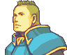

Support Rank C

バース 私 まだ
あなたに お礼を言ってなかったわね

礼 ですか？
私を 助けに
来てくれたじゃない
あのことですか
我々は 騎士のつとめを
果たしたまでです
むしろ 到着が遅れてしまい
申し訳ないくらいです
バース・・・
ごめんなさい
わたし バースたちに
何もしてあげられない
そうだ この首飾りを・・・
姫さま よいのです
われらは ほうびのために
戦ったのではありません
でも・・・
リリーナさまが
ご無事でした
我々にはそれだけで
十分ですよ
ありがとう バース・・・
Support Rank B
ねえ バース
デビアスと レイガンス・・・
二人のことおぼえてる？
・・・ベルンに通じて
反乱をくわだてた男 としか
人間的にも・・・
いいウワサは聞きませんでした
将軍の地位を利用して
違法に金品を受け取っていたとか
そう・・・
オスティアの反乱は
ベルン軍侵攻前から計画されていたようです
アストールどのの内偵でも
それを裏づける事実が発見されています
そうね
私がバカだったの・・・
みんな お父さまの・・・
オスティアの騎士たちだから
みんなを信じたかった・・・
疑いたくなかった・・・
しかし そのために
ご自分の命まで あやうく・・・
そうね・・・
本当に・・・ごめんなさい
リリーナさま
御身を くれぐれも大切に
リリーナさまは われわれ臣下にとって
かけがえのない方なのですから
Support Rank A
ねえ バース・・・
お父さまが亡くなって・・・
オスティアはどうなってしまうのかしら
この戦いの後 誰かが立て直さねば
荒れていくばかりでしょう
そしてそれは
リリーナさまの役目です
オスティアの民たちは 皆
リリーナさまを待っています
でも・・・
私なんかじゃ・・・だめだと思うの
今の私では・・・
みんなに迷惑をかけるだけ・・・
バースも・・・
そう思うでしょ？
・・・・・・
人の上に立つ者が
いかにあるべきかは・・・
それは
私にはわかりません
ただ・・・
あのとき リリーナさまが
臣下を信じるとおっしゃったこと
結果だけ見れば
あれは誤りだったかもしれません
しかし
そのようなリリーナさまのお心を
私は 間違っているとは
決して思いません
・・・・・・
私から申し上げられることは
一つです
リリーナさまが
どのような道を歩まれようと
我々騎士は その後に
ついてまいります
必ずその身を
お守りいたします